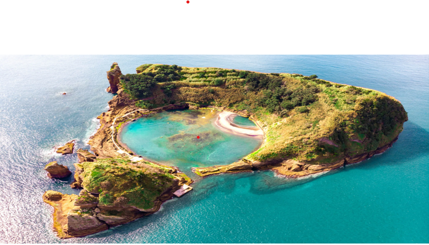

⇪
Its main industries are agriculture, dairy farming, livestock, fishing, and tourism, which has become a major service activity in the region.
These structures have been used by settlers in the Azores to store grain and the suggestion by Ribeiro that they might be burial sites is unconfirmed. Detailed examination and dating to authenticate the validity of these speculations is lacking; thus it is unclear whether these structures are natural or human-made and whether they predate the 15th century Portuguese colonization of the Azores
IMPORTANT UPDATE:
Unesco designated three of the islands (Graciosa, Flores and Corvo) as biospheres, and the archipelago also contains 13 Ramsar sites (important wetlands) and more than 30 Blue Flag beaches.

Unesco designated three of the islands (Graciosa, Flores and Corvo) as biospheres, and the archipelago also contains 13 Ramsar sites (important wetlands) and more than 30 Blue Flag beaches. Combine mineral-laden soil with a subtropical climate surrounded by Gulf Stream-warmed waters, and the result is a crucible for life.